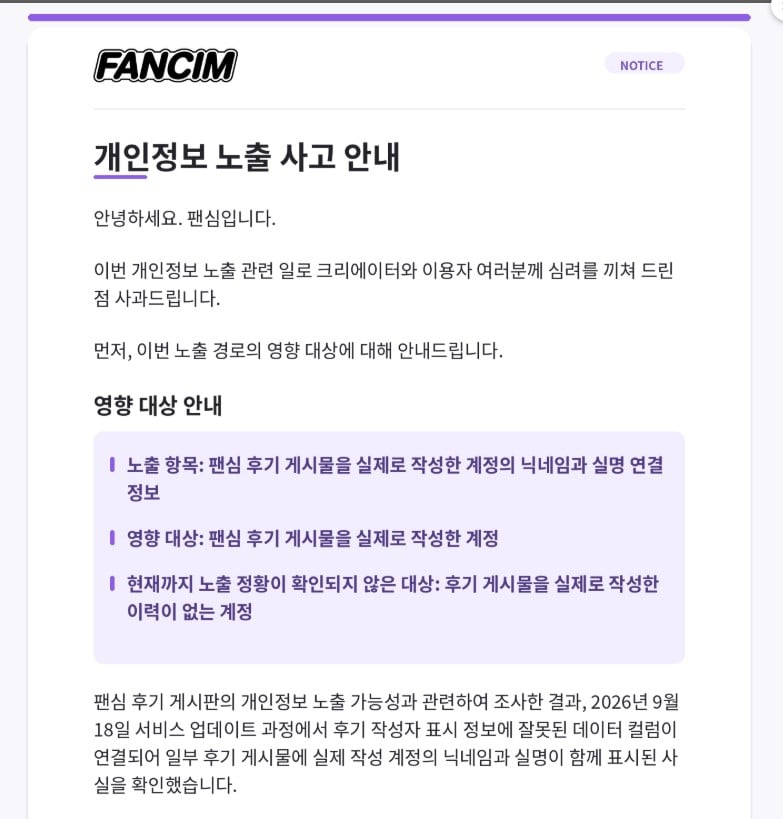

팬심이라고 인터넷 방송인들한테 선물 보내주면 대신 받아주는 플랫폼이 있었음
인방에서 민감할 수 밖에 없는 개인정보를 보호해준다는 것에 많은 인방인들이 사용하는 플랫폼었는데....

개인정보 유출 사건이 일어남
이게 단순히 F12 개발자도구 내부 키값으로 해당 방송인의 실명을 알아냈 수 있었음
그리고 이걸 누군가가 크롤링해서 대량으로 유출시켜버림
익명과 개인정보를 위해서 사용한 플랫폼인데 오히려 실명이 유출되어버린 사건
이걸로 가장 중요한 인방인들 탈퇴러쉬는 물론 꽉변호사가 단체소송 공지함
사실상 인방 시장을 대상으로 하는 팬심은 사업이 아에 망했다고 봐야할 사건이 났음
실명만 털렷어도 방송중에 노출되는 소소한 개인정보들과 종합해서 특정 가능할듯
치명적인 사건이네 ㅉㅉ